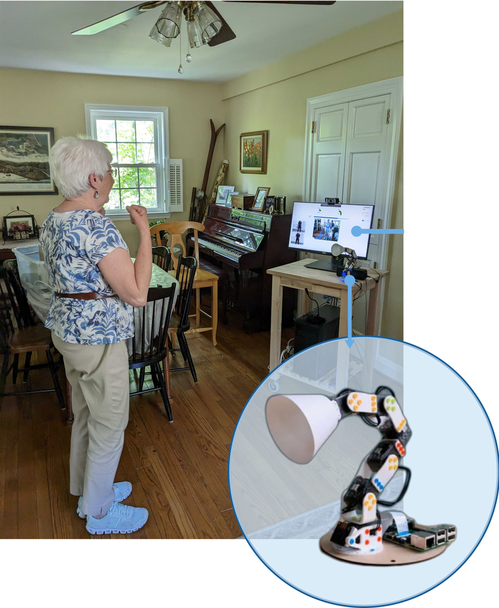

Structure
Trainer
A robot that provides routine, pacing, and clear exercise guidance for users who want an external scaffold.
- Leads structured routines
- Demonstrates form and counts progress
- Works when guidance feels supportive, not punitive
Designing Robot Exercise Partners
This project began with a design question rather than a technical one: if a robot were going to support physical activity at home, what kind of relationship should it create? Across participatory workshops and a later in-home case study with Poppy Ergo Jr, the work explored how exercise support could become more social, more adaptive, and more respectful of older adults' autonomy.

Poppy as a robot exercise partner: a design probe shaped through participatory work with older adults and later tested in the home.

The project moved through interviews, workshops, and critique sessions before later testing those design ideas through an in-home deployment.
Existing exercise tools often assume that better tracking, more reminders, or stricter routines will solve inactivity. The papers point in a different direction: older adults wanted support that understood their schedule, their limits, and the emotional texture of exercise at home. That made this project fundamentally about interaction design and relationship design.
Participants wanted control over when and how they exercised, rather than daily compliance pressure imposed by the system.
Pain, mobility constraints, and fall concerns made rigid exercise flows feel exclusionary instead of supportive.
What many participants wanted most was presence: a robot that exercised with them, not one that simply monitored them.
"Having a workout group motivates me more to work out. You want to show up for the other people."
Co-design participant — on social motivation
"I'm scared of falling, and I have to be really careful with some movements. The robot should know that."
Co-design participant — on the need for physical adaptation
The most important output of the co-design work was not a single preferred robot. It was a small design vocabulary for how a robot could relate to a user during physical activity.
Structure
A robot that provides routine, pacing, and clear exercise guidance for users who want an external scaffold.
Presence
A robot that joins the user in exercise and offers encouragement through presence rather than direction.
Adaptation
A robot that reshapes routines around physical limitations, chronic conditions, and changing mobility.
The project’s design contribution lives in these artifacts as much as in the written guidelines. They make visible how participants imagined tone, form, and flow.

Prototype concepts from workshops surfaced different expectations around posture, approachability, and social presence.
Sociality, health goals, and enjoyment motivated activity. Pain, fatigue, fall risk, and scheduling friction undermined it. Together these findings explain why the relationship model mattered so much.

Motivators clustered around companionship, wellbeing, and enjoyment rather than around surveillance or optimization.

Barriers were practical and embodied: pain, fatigue, fear of falling, and the difficulty of fitting routines into daily life.
Participants repeatedly described wanting someone to exercise with, which gave the Companion role real grounding.
Physical limitations and injury concerns made adaptation feel essential, not optional.
The preferred interaction style was clear: encouragement without nagging, guidance without loss of control.
The later case study did not replace the co-design work. It tested it. Poppy Ergo Jr became the first probe for asking which design principles held up once the robot entered daily life.

The home study used Poppy Ergo Jr with a touchscreen interface, hotword activation, pose estimation, and wearable sensing to structure exercise sessions in the participant's home.
The participant woke Poppy, selected routines through the touchscreen, and retained control over when and what to do.
Poppy demonstrated exercises while pose tracking and wearable data supported monitoring and coaching during the session.
The week-long deployment revealed whether the co-designed interaction ideas were robust enough for real routines and real bodies.
The system worked well enough to surface a sharper insight: the missing pieces were not just technical bugs, but places where the design still reflected an engineer’s idea of exercise more than an older adult’s.
Flexible routine structure mattered more than strict daily repetition, reinforcing the co-design emphasis on user control.
A small exercise library was not enough for a week-long experience, especially given how much exercise content already exists elsewhere.
Rigid sensing assumptions created friction for a participant with an arm issue, validating exactly why the Augmenter role mattered.
The deployment suggested that robot presence can sustain routine, but only when it respects the user’s own pacing and bodily constraints.
"I don't want to work out an hour a day — 20 minutes a day would be fine, but I'd prefer it being an hour, three days a week."
Deployment participant — on flexibility over compliance
"I have an arm issue, and unless I completed the exercise exactly the way they wanted it done, it wouldn't move forward — so I soldiered through."
Deployment participant — on why adaptation cannot be optional
Across both papers, the work suggests a smaller set of durable design principles: build for autonomy, adapt to real bodies, treat social presence as a primary design material, and keep interaction accessible and legible.
The robot should feel like a partner in activity, not a compliance device that enforces a routine from above.
Exercise support has to respond to pain, mobility limitations, and fluctuating capacity rather than demanding ideal form.
Timing, intensity, and routine structure need to stay negotiable so the system fits into a user’s life instead of trying to reorganize it.
Appearance, feedback, and interface flow all shape trust. The robot has to feel approachable, understandable, and easy to use.